Shield Bot V0.9b
The Shield Bot is a stackable Arduino Shield that transforms your Arduino into a fully featured beginner robot. The Shield Bot has been designed and specially equipped with on board line following sensors and expansion ports to be the robotic buddy that will teach you about robotics, electronics, programming. It is also packed full of expansion ports so it can also be the perfect base for any desktop robotics project!
Model: SLD01091P
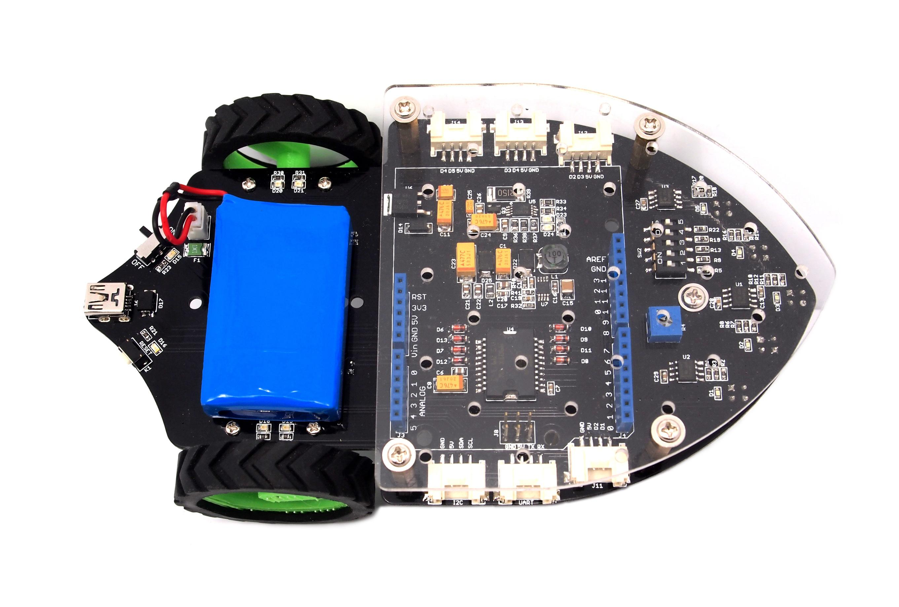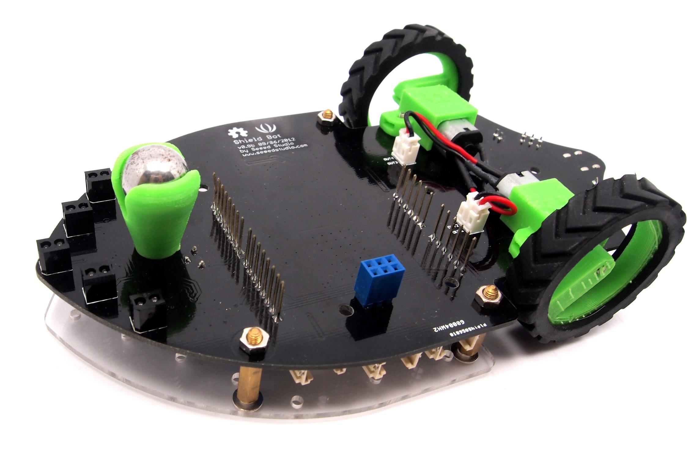
Features
- Easy to start - The Shieldbot is plug and play and can be running out of the box in minutes
- Expandable for imagination- solderless grove expansion ports enable easy attachment of more sensors and actuators, and shield headers allow the use of additional Arduino shields
- Open source - Its designed to be hacked, adapted and transformed into whatever you want it to be!
- Arduino Based - the Shieldbot is an Arduino shield, so the extensive Arduino community and shield ecosystem can be used for endless expansion!
Specifications
- 5x IR reflectance sensors for line and edge following
- 900 mAh Li-ion rechargeable battery
- Two durable 160:1 micro metal gearmotors
- 6x Grove expansion ports
- Stackable shield headers
Interface Function
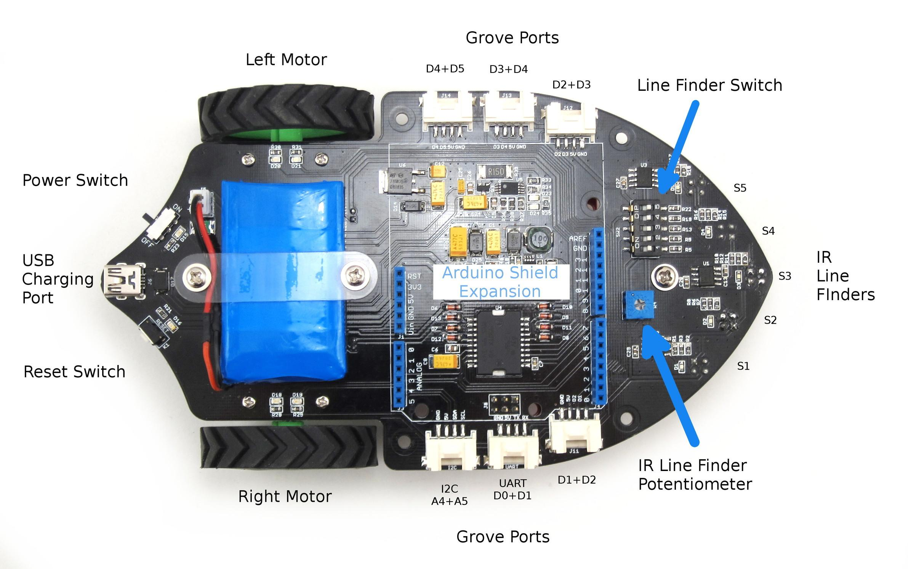
- Power Switch: When ShieldBot is off, The shield bot can not run. But you can use the USB Charge Port to charge for battery.
- USB Charge Port: USB mini-B, used for charging for battery.
- Grove Ports: Grove ports access pins D0, D1, D2, D3, D4, D5, A4, A5.can connect Grove modules to these Grove ports.
Note: 1) If S5 is enabled you can’t use grove ports j14 and j13.
- 2) You may only use ONE of the arduino’s serial line, uart grove port or j11 as they all share the D1/TX line.
- IR Line Finder Potentiometer: Used for adjusting the Line Finders Sensitivity. Clockwise adjustment, the Sensitivity increases; Counterclockwise adjustment,the Sensitivity decreases.
- IR Line Finders: S1 to S5. Blue if non reflective surface is detected (ex Black tape line)
- Enable Switch: Turn switch towards "ON" to connect line finders to I/O pins(Occupied pins are A0,A1,A2,A3,D4) of Arduino. The LineFollowingSimple demo in library is used line finders output signal to control Shield Bot run. If switch is toward "OFF", Seeeduino/Arduino cannot control Shield Bot through line finders output signal.
- Arduino Shield Expansion Headers: Shield Bot can truly stack other shields.
Status Lights
The Shield Bot has lots of LEDs to show you whats going on!
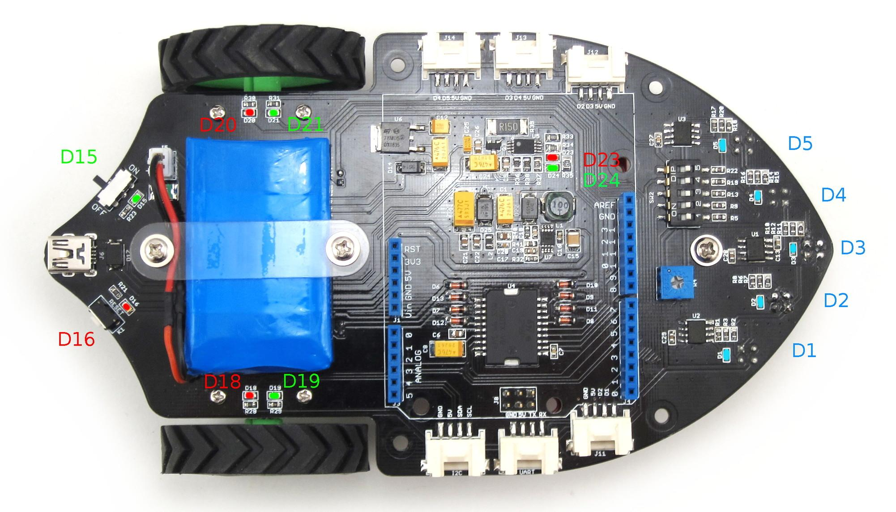
| Light Number(s)
|
Function
|
Status
|
| D15
|
Power
|
Green when Shieldbot is on. When ShieldBot is off, ShieldBot can only charge for battery.
|
| D23 and D24
|
Charging status
|
Red means charging, green means done charging
|
| D16
|
Reset
|
Red if reset button is pressed
|
| D18 and D19
|
Right Motor Indicators
|
Green means forwards, red means backwards, both means stopped
|
| D20 and D21
|
Left Motor Indicators
|
Green means forwards, red means backwards, both means stopped
|
| D1 D2 D3 D4 D5
|
Light Sensor Indicators
|
Blue if non reflective surface is detected (ex Black tape line)
|
- Shield Bot Motor LED Statuses
Structure
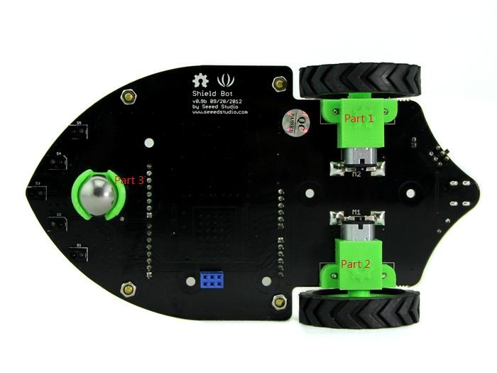
The Part 1,Part 2 and Part 3 are made by our 3D printer. The two hubs are the same. Print Diagram as show below. Very magical！
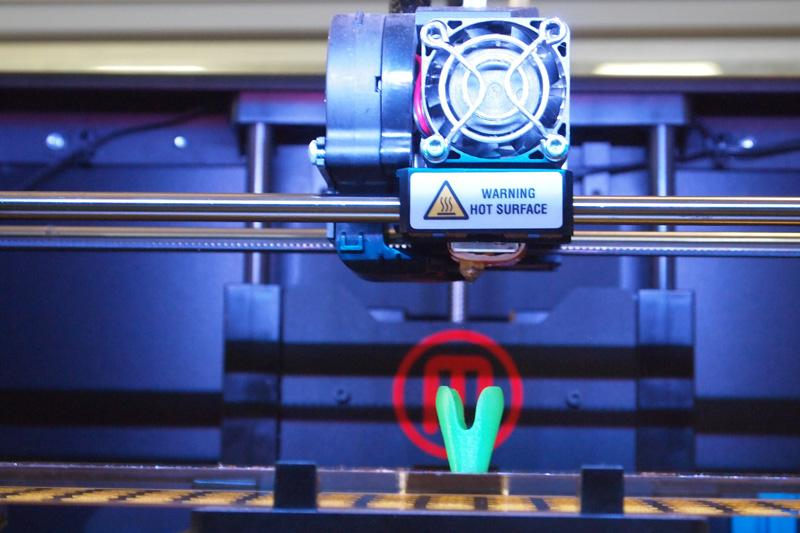 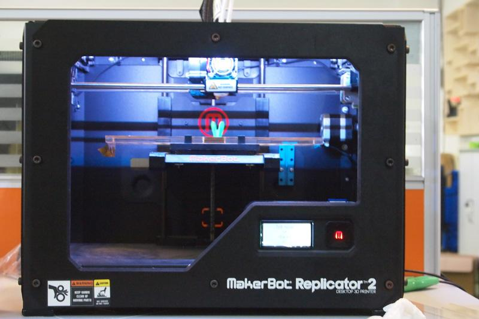
Usage
Getting the Shieldbot setup is quick and easy! Follow these steps to get your robotic companion up and running.
The Preparatory Work
- First you need plug Arduino into the buttom of Shield Bot and connect it to PC using a USB cable .
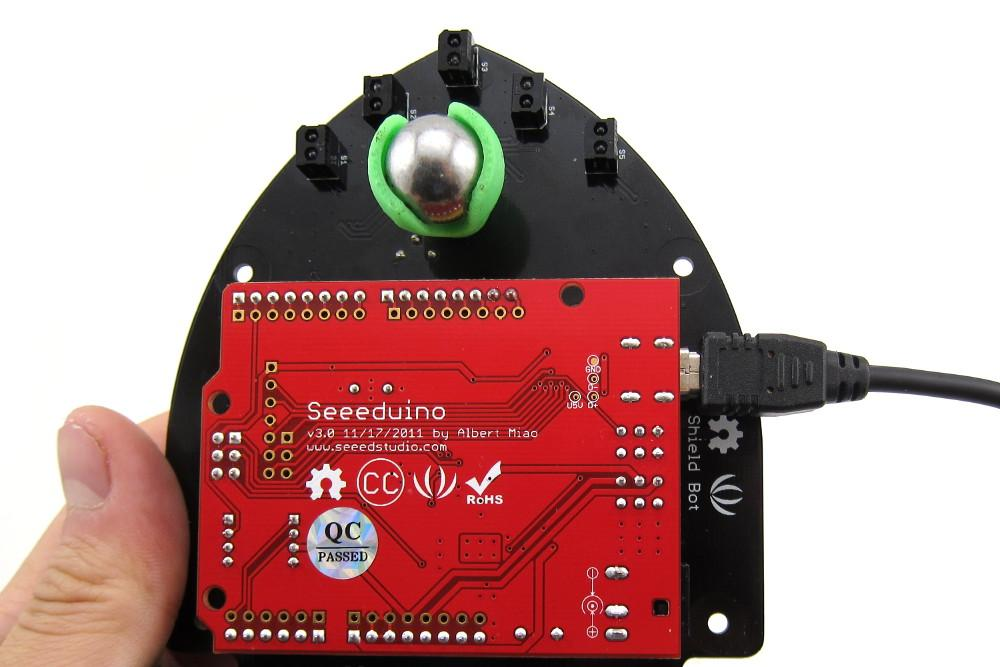
- You would better turn Enable Switch towards OFF before upload the code. Otherwise, It runs when you are not attention and may scare you.
We've built a nice library for the Shield Bot with useful functions to control your Shield Bot and a number of examples so you can get it up and running in no time!
- Download the library from here and Unzip. Please open the Note.txt file before using our Library.
- Put ShieldBot file into the libraries file of Arduino IDE by the path: ..\arduino-1.0.1\libraries.
Install the battery
The battery is needed when you want to make Shield Bot run on the ground. Please reference the below picture to install the battery.
图片
After the installation is complete, You will see:
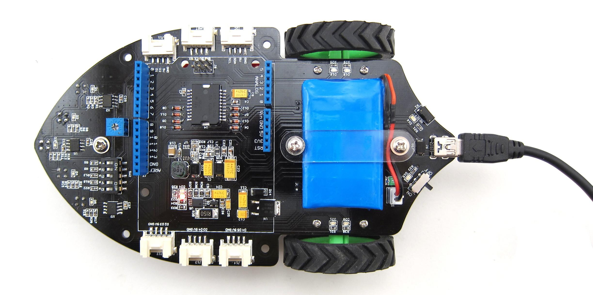
Note:
- 1) Once the battery is installed, you can charge battery with a mini-b USB cable. And the output current of usb port should be more than 1.5A. If not, the charging efficiency will be lower. When the battery is charging, a red LED will be on. When it is done charging, a green LED will be lit.
- 2) When upload the code, you need connect the usb port of your seeeduino to your PC. The usb port on the shield bot is used for charging for battery.
Demo 1: Drive motors to run
- Open the Arduino environment and go to File->Examples->Shieldbot->drive to load the first Shield Bot example. Make sure you select the correct Arduino Board and Serial Port.
- Then upload code onto the Arduino. Once the upload is complete, the console should show "Done Uploading".
- You can unplug the usb cable after completing the upload.
- Then put the Shield Bot on a spacious place and turn the enable switch turn ''ON.
- Now the Shield Bot will run at a certain speed.
Demo 2: Following Black Line Run
The Shield Bot can detect reflective surface based on the Line finder sensors (s1,s2,s3,s4,s5). The blue indictors will lit if non reflective surface is detected (ex Black tape line). Now let us use it to make the run following the black line.
Note: Make sure the dip switches are turned ON, and none of your shields are using pins A0,A1,A2,A3 or D4.
- Reupload the new demo:LineFollowingSimple after connect Seeeduino to PC using the USB cable.
- After complete the upload. Put the Shield Bot in the Pre-build black runway. Then the fine screen will appear:
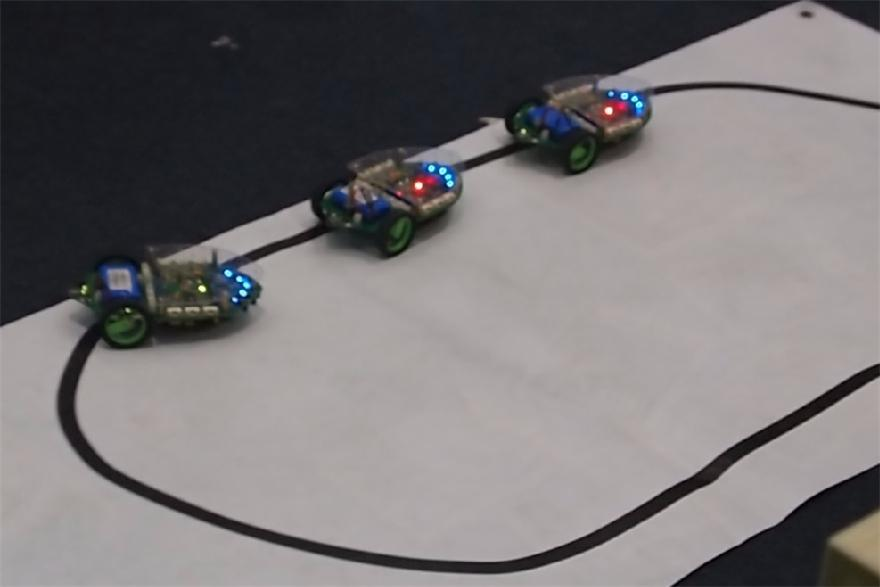
- You can adjust the IR Line Finder Potentiometer to change the Line Finders Sensitivity. When Clockwise adjustment, the Sensitivity increases, Counterclockwise adjustment,the Sensitivity decreases. Have a try!
Appatation Instances
1. Clock
This is a incredibly simple, working clock. The wheels turn one forward and one reverse, spinning the reflectance sensors around the wheel indicating the minutes. Upon the hour mark the bot drives forward and advances the linear slide to indicate hours. Extra credit for the free linear rails made out of laser cut scrap and cellophane tape!
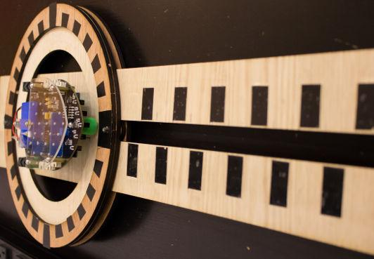
2. Shot.Bot
It was a really gorgeous device that many people in the event remarked they'd like to buy. The line following robot would take orders then drive the track to the dispenser where it would use a servo to actuate an amount of either of 3 beverages, before driving back to the patron
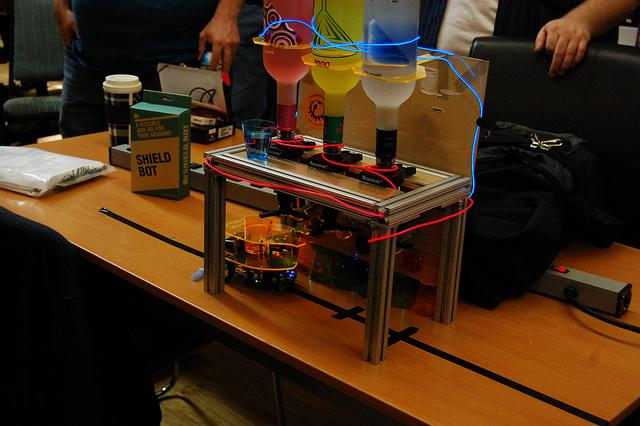
3. Simon
There has a a beautifully designed, though not quite finished, 2 player heads up simon clone. The bot plays out a tune with lights and you use the laser cut puck, complete with braille so even the sight impaired could play, to mark the tones on the whiteboard. The Shieldbot then drives forward and uses the sensors to see if you've marked correctly. You want to get more right answers than your opponent so the bot drives towards their goal!
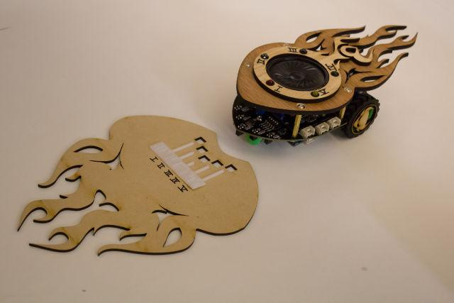
4. HackPHX-Plotter
The device is very close to knocking off the Der Kritzler 2d drawing machine which is a vertical x,y table with makerslide and had the ingenious idea of bolting the tires of the Shield bot down such that when it was put in reverse, it lifted the pen off the drawing surface :) They even worked with the designer to come up with a PC side user interface!
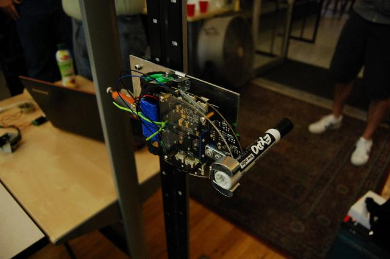
Reference
To use the Shield Bot library simply add the Shield Bot library and declare a Shieldbot object at the top of your Arduino code before your void setup()
#include <Shieldbot.h> //includes the Shield Bot Library
Shieldbot shieldbot = Shieldbot(); //decares a Shieldbot object
setMaxSpeed(int both)
- Description: set max speed of two motors.
- both: between 0(basically off) and 255(full speed)
setMaxSpeed(int left, int right)
- Description: Write a max speed to the left and right motor.
- left,right: Left is the speed of the left motor. right is the speed of the right motor. between 0(basically off) and 255(full speed)
rightMotor(char mag)
- Description: Enables the right motor, negative for backwards, positive for forwards. If you make one motor drive slower, it will turn in that direction. If you make the motors turn in opposite direction it will spin.
- mag: the direction to spin the right motor; -128: backwards all the way, 0: donot move, 127: forwards all the way
leftMotor(char mag)
- Description: Enables the left motor, negative for backwards, positive for forwards.
- mag: the direction to spin the left motor; -128: backwards all the way, 0: donot move, 127: forwards all the way
forward()
- Description: Enables the motors to send the bot straight forward at the setSpeed().
backward()
- Description: Enables the motors to send the bot straight backward at the setSpeed().
drive(char left, char right)
- Description: All purpose drive call. Calls leftMotor and rightMotor directly.
- left: between -128 (left motor backwards 100% of max speed), 0 (standing still), and 127 (left motor forwards 100% of max speed) :right: between -128 (right motor backwards 100% of max speed), 0 (standing still), and 127 (right motor forwards 100% of max speed)
stop()
- Description: Disables the motors. You may also use drive(0,0).
stopLeft()
- Description: Disables the left motor. You may also use drive(0,X).
stopRight()
- Description: Disables the right motor. You may also use drive(X,0).
fastStop()
- Description: Disables the right motor. You may also use drive(X,0).
fastStopLeft()
- Description: Disables the left motor quicker. This is considered possibly bad for the motor chip so use at your discretion
fastStopRight()
- Description: Disables the right motor quicker. This is considered possibly bad for the motor chip so use at your discretion
readS1(), readS2(), readS3(), readS4(), readS5()
- Description: Reads any of the 5 light sensors on board. NOTE you NEED to connect the sensors to the arduino ports using the dip switch block (switches TOWARDS the numbers and ON text) These switches would otherwise allow you to use those pins for other things if you didn't want to use your light sensors
- Returns: LOW if the surface reflects (ex. white) and HIGH if the surface doesn't reflect anything (ex BLACK)
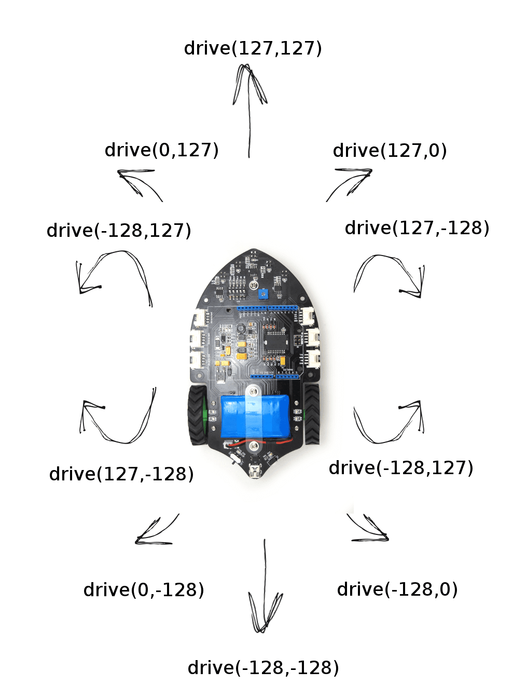
Resources
Copyright (c) 2008-2016 Seeed Development Limited (
www.seeedstudio.com /
www.seeed.cc)
This static html page was created from http://www.seeedstudio.com/wiki